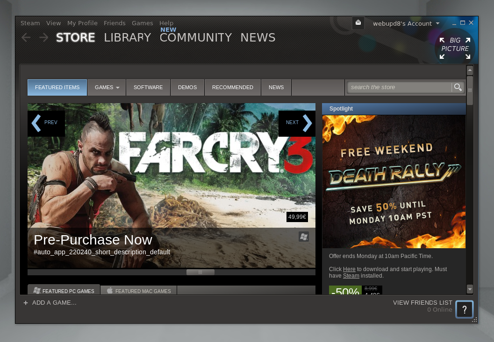

getting started: to use steam you must first have a steam account, you must make a name that has not already been taken by other people, then choose a worthy password and put in your current email.then steam will send you an email with a verification code and you will take that code and put it into the verification slot. and you can now freely use steam 
how to use: steam is mainly a system that people use for video games, it has a large selection of games to choose from, some are free and some cost money.when you load up steam it will show you your video game library where you can pick and choose the games you have and play them and also see how many hours you have spent on that game(it appears right below the name of the game when you click on it). to acquire new games you have to go to the store, it is at the top left of your steam, once clicked it will take you to the store, there you will see various video games, if you see any that you may like you can click on them and it will take you to the video games homepage, there you can buy the game after setting up your valid credit card or if the game is free you can download it straight off the website. at the top in the blue is the nav bar for steam.you can select what you would like to look at by hovering over the select menu and a drop down bar will appear, if you dont see what you are looking for there you can look for it directly by name by using the search the store bar at the top right of the nav bar

workshop: if you go to your library and select a game on the right of the screen you may see a bow that says steam workshop, the workshop is a place where the steam community creates things for the said game you are playing and uploads them to the workshop so that anyone can use them, people up load mods and maps and such for the video games. to get to the workshop you go to your game and go to the steam workshop menu and click the light gray box that says browse the workshop. once there you see the homepage for workshop, there you can look up tags for specific workshop things, when you find the workshop mod you want you click on it and subscribe, it automatically saves the mod and when you start up the game you are playing it will download that mod.